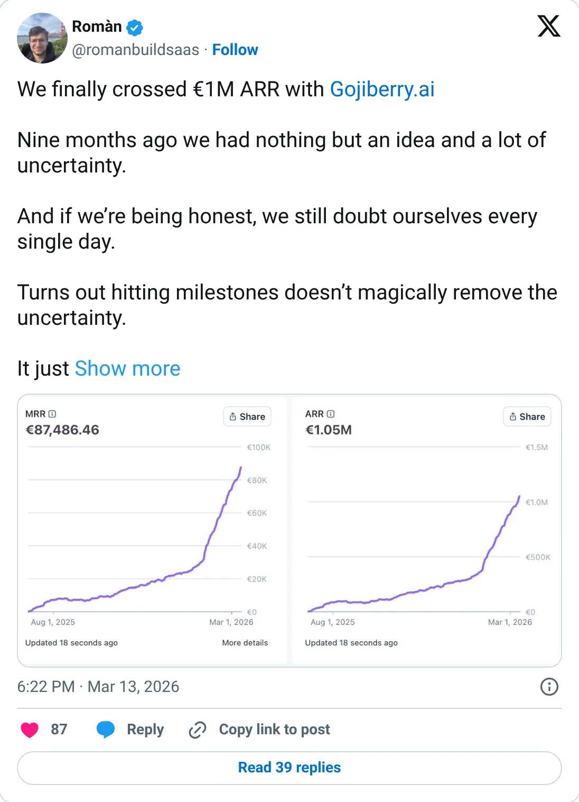
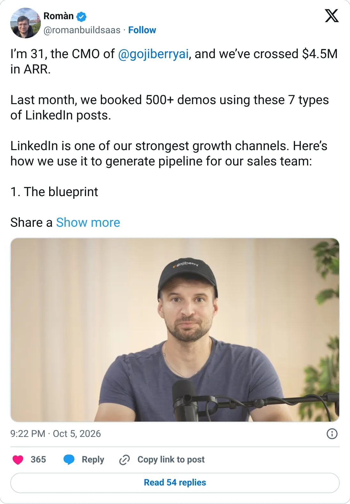

Real, don't clone
Gojiberry
Buying-signal outbound, already in YC at $424k MRR.
$424,368 MRR
Should you build this
Gojiberry finds warm B2B leads from public buying signals and starts the outreach. Stripe says $424,368 MRR on the day of this report, a bit above the founder's own tweet from three days earlier. They joined Y Combinator. The signal is a real market — traxy is the smaller, still-indie version of it. Study the signal. Don't clone the YC company feature for feature.
Cited from the captured posts, shown below: the earliest captured post (Mar 13, 2026) is the source for “Crossed €1M ARR, ~9 months after the idea”; the latest milestone (Oct 5, 2026) is the source for “Crossed $4.5M ARR”.
Posts this is based on

Crossed €1M ARR, ~9 months after the idea
Open on X

Crossed $4.5M ARR
Open on X
What the product is
AI agents that find warm B2B leads from buying signals (LinkedIn activity, job changes, competitor engagement) and start outreach.
⚠ Bootstrapped to $1M ARR, then joined Y Combinator (P26).